Collection of models that illustrate model use and test models
This package contains examples for the use of models that can be found in Buildings.Utilities.Math.
Extends from Modelica.Icons.ExamplesPackage (Icon for packages containing runnable examples).
| Name | Description |
|---|---|
| Test model for average function | |
| Test model for bicubic function | |
| Test model for biquadratic function | |
| Test model for boolean replicator | |
| Test model for integer replicator | |
| Test model for inverseXRegularized function | |
| Test model for ploynominal function | |
| Test model for powerLinearized function | |
| Test model for quadraticLinear function | |
| Test model for regNonZeroPower function | |
| Test model for smooth min and smooth max functions | |
| Test model for smoothExponential function | |
| Test model for smooth limit | |
| Test model for smooth minimum | |
| Test model for splice | |
| Test model for functions that take a vector as argument |
 Buildings.Utilities.Math.Examples.Average
Buildings.Utilities.Math.Examples.Average
Test model for average function
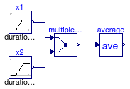
This model tests the implementation of Buildings.Utilities.Math.Average.
Extends from Modelica.Icons.Example (Icon for runnable examples).
Buildings.Utilities.Math.Examples.Bicubic
Test model for bicubic function
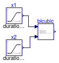
This model tests the implementation of Buildings.Utilities.Math.Bicubic.
Extends from Modelica.Icons.Example (Icon for runnable examples).
Buildings.Utilities.Math.Examples.Biquadratic
Test model for biquadratic function

This model tests the implementation of Buildings.Utilities.Math.Biquadratic.
Extends from Modelica.Icons.Example (Icon for runnable examples).
Buildings.Utilities.Math.Examples.BooleanReplicator
Test model for boolean replicator
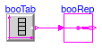
This model tests the implementation of Buildings.Utilities.Math.BooleanReplicator.
Extends from Modelica.Icons.Example (Icon for runnable examples).
Buildings.Utilities.Math.Examples.IntegerReplicator
Test model for integer replicator
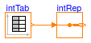
This model tests the implementation of Buildings.Utilities.Math.IntegerReplicator.
Extends from Modelica.Icons.Example (Icon for runnable examples).
Buildings.Utilities.Math.Examples.InverseXRegularized
Test model for inverseXRegularized function
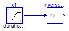
This model tests the implementation of Buildings.Utilities.Math.InverseXRegularized.
Extends from Modelica.Icons.Example (Icon for runnable examples).
Buildings.Utilities.Math.Examples.Polynominal
Test model for ploynominal function

This model tests the implementation of Buildings.Utilities.Math.Polynominal.
Extends from Modelica.Icons.Example (Icon for runnable examples).
Buildings.Utilities.Math.Examples.PowerLinearized
Test model for powerLinearized function
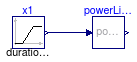
This model tests the implementation of Buildings.Utilities.Math.PowerLinearized.
Extends from Modelica.Icons.Example (Icon for runnable examples).
Buildings.Utilities.Math.Examples.QuadraticLinear
Test model for quadraticLinear function

This model tests the implementation of Buildings.Utilities.Math.QuadraticLinear.
Extends from Modelica.Icons.Example (Icon for runnable examples).
Buildings.Utilities.Math.Examples.RegNonZeroPower
Test model for regNonZeroPower function
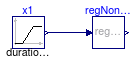
This model tests the implementation of Buildings.Utilities.Math.RegNonZeroPower.
Extends from Modelica.Icons.Example (Icon for runnable examples).
Buildings.Utilities.Math.Examples.SmoothBlocks
Test model for smooth min and smooth max functions
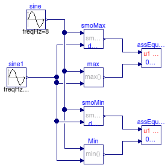
This model tests the implementation of blocks that approximate non-differentiable functions by smooth functions.
Extends from Modelica.Icons.Example (Icon for runnable examples).
Buildings.Utilities.Math.Examples.SmoothExponential
Test model for smoothExponential function
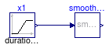
This model tests the implementation of Buildings.Utilities.Math.SmoothExponential.
Extends from Modelica.Icons.Example (Icon for runnable examples).
Buildings.Utilities.Math.Examples.SmoothLimit
Test model for smooth limit
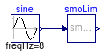
This model tests the implementation of Buildings.Utilities.Math.SmoothLimit.
Extends from Modelica.Icons.Example (Icon for runnable examples).
Buildings.Utilities.Math.Examples.SmoothMin
Test model for smooth minimum
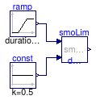
This model tests the implementation of Buildings.Utilities.Math.SmoothMin.
This model also illustrates that the output can be larger than
the minimum of the two input signals. Smaller values for deltaX
will reduce this effect. Therefore do not use this function when the minimum
output value should be respected.
Extends from Modelica.Icons.Example (Icon for runnable examples).
Buildings.Utilities.Math.Examples.Splice
Test model for splice
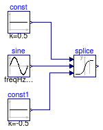
This model tests the implementation of Buildings.Utilities.Math.Splice
Extends from Modelica.Icons.Example (Icon for runnable examples).
Buildings.Utilities.Math.Examples.VectorFunctions
Test model for functions that take a vector as argument
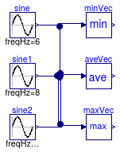
This model tests the implementation of functions that take a vector as an argument.
Extends from Modelica.Icons.Example (Icon for runnable examples).